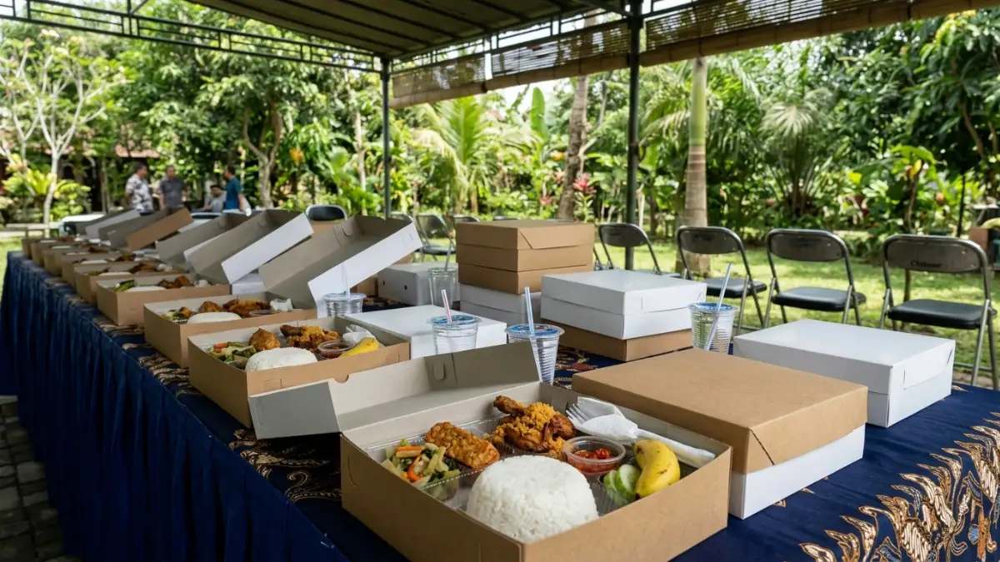

Penyajian menu makan siang rapat outdoor yang praktis, higienis, dan tahan suhu luar ruangan untuk menjaga stamina peserta rapat. (Ilustrasi)
Penyajian menu makan siang rapat outdoor yang praktis, higienis, dan tahan suhu luar ruangan untuk menjaga stamina peserta rapat. (Ilustrasi)
Menu makan siang rapat outdoor yang ideal adalah makanan praktis, tahan suhu luar ruangan, mudah dimakan tanpa meja penuh, aman secara higienis, dan seimbang gizinya.
- Menu rapat outdoor perlu tahan panas, tidak mudah basi, dan mudah dimakan sambil duduk di kursi lipat atau tikar.
- Makanan berkuah, bersantan, dan bermayones lebih berisiko cepat rusak di udara terbuka.
- Nasi box cocok untuk keamanan dan kerapian, prasmanan untuk kelompok besar yang beragam, finger food untuk rapat santai.
- Kebutuhan diet peserta, anggaran, dan rencana cuaca buruk harus dipastikan sebelum menu dikunci.
- Jeda makan 45 sampai 60 menit di zona teduh membuat rapat lanjutan tetap produktif.
DAFTAR ISI
- 1. Apa Itu Menu Makan Siang Rapat Outdoor?
- 2. Mengapa Menu Makan Siang Rapat Outdoor Perlu Dirancang Khusus?
- 3. Bagaimana Cara Merencanakan Menu Makan Siang Rapat Outdoor Langkah demi Langkah?
- 4. Faktor Apa Saja yang Menentukan Pilihan Menu Makan Siang Rapat Outdoor?
- 5. Apa Saja Contoh Menu Makan Siang Rapat Outdoor yang Cocok?
- 6. Mana yang Lebih Baik: Nasi Box, Prasmanan, atau Finger Food untuk Rapat Outdoor?
- 7. Apa Kesalahan Umum dalam Menyiapkan Makan Siang Rapat Outdoor?
- 8. Bagaimana Tips Menjaga Rapat Tetap Nyaman Selama Waktu Makan Siang?
- 9. Kesimpulan
- 10. FAQ
1. Apa Itu Menu Makan Siang Rapat Outdoor?
Menu makan siang rapat outdoor adalah rangkaian hidangan yang disiapkan khusus untuk peserta rapat di taman, kebun, pantai, atau area terbuka lain.
Berbeda dengan makan siang rapat di ruang berpendingin udara, menu untuk rapat outdoor harus mempertimbangkan suhu lingkungan, angin, debu, dan serangga.
Peserta biasanya makan di sela agenda, sering tanpa meja makan penuh, sehingga makanan perlu praktis dipegang dan tidak mudah tumpah.
Menu ini ditujukan bagi penyelenggara rapat, gathering tim, lokakarya, perencanaan strategis di vila atau resor, dan kegiatan perusahaan lain di ruang terbuka.
Menu ini digunakan ketika rapat berlangsung beberapa jam dan peserta perlu mengisi energi tanpa berpindah lokasi jauh.
Manfaat utamanya adalah menjaga stamina peserta, mempertahankan fokus, dan menciptakan suasana santai yang mendukung diskusi.
Batasannya, menu outdoor memiliki pilihan lebih terbatas dibanding makan siang di restoran, karena tidak semua hidangan tahan lama di udara terbuka.
2. Mengapa Menu Makan Siang Rapat Outdoor Perlu Dirancang Khusus?
Makanan di area terbuka terpapar panas, debu, dan serangga, sehingga menu rapat outdoor perlu dirancang khusus agar tetap aman dimakan dan tidak mengganggu jalannya rapat.
Risiko keamanan pangan menjadi alasan terkuat. Menurut WHO, sekitar 600 juta orang di dunia jatuh sakit setiap tahun setelah mengonsumsi makanan yang terkontaminasi, dan sekitar 420.000 di antaranya meninggal dunia (estimasi WHO periode 2010 yang masih dirujuk dalam lembar fakta keamanan pangan WHO hingga 2026).
Angka ini menunjukkan bahwa penanganan makanan yang kurang tepat, terutama pada suhu hangat, memiliki dampak serius.
Alasan kedua adalah kualitas gizi. Hasil Riskesdas 2018 dari Kementerian Kesehatan RI mencatat bahwa sekitar 95,5 persen penduduk Indonesia berusia lima tahun ke atas masih kurang mengonsumsi sayur dan buah.
Karena itu, rapat dengan makan siang yang hanya berisi nasi dan lauk gorengan kehilangan kesempatan memperbaiki pola makan peserta. Rapat outdoor yang menyertakan sayur dan buah segar memberi kontribusi kecil namun nyata.
Alasan ketiga adalah kenyamanan. Makanan yang terlalu berminyak atau berbau tajam dapat membuat peserta mengantuk atau tidak nyaman ketika rapat dilanjutkan. Menu yang dirancang baik membantu peserta kembali ke agenda dengan energi stabil.
3. Bagaimana Cara Merencanakan Menu Makan Siang Rapat Outdoor Langkah demi Langkah?
Perencanaan dimulai dari data peserta dan lokasi, lalu menentukan jenis menu, metode penyajian, dan jadwal pengiriman, sebelum akhirnya menyiapkan rencana cadangan untuk cuaca buruk.
Langkah pertama adalah mengumpulkan data peserta: jumlah orang, usia, pantangan agama, alergi, dan preferensi diet seperti vegetarian.
Langkah kedua adalah survei lokasi: apakah tersedia area teduh, meja, listrik, air bersih, dan tempat sampah.
Langkah ketiga adalah memilih jenis menu yang sesuai kondisi lokasi, misalnya hidangan kering dan panggang bila lokasi tidak punya dapur.
Langkah keempat adalah menetapkan metode penyajian dan peralatan pendukung, seperti cooler box, wadah penghangat, serbet, tisu basah, dan sendok garpu.
Langkah kelima adalah menyusun jadwal: kapan makanan dimasak, kapan dikirim, dan kapan disajikan. Idealnya makanan tiba dekat dengan waktu makan, bukan berjam-jam sebelumnya.
Langkah keenam adalah menyiapkan rencana cadangan, yaitu tenda tambahan atau ruang tertutup terdekat bila hujan turun mendadak.
4. Faktor Apa Saja yang Menentukan Pilihan Menu Makan Siang Rapat Outdoor?
Pemilihan menu ditentukan oleh beberapa faktor penting, yaitu kondisi cuaca dan suhu di lokasi acara, jumlah peserta dan persyaratan diet mereka, lamanya rapat yang diselenggarakan, ketersediaan fasilitas dapur dan sumber listrik, serta besaran anggaran yang telah ditetapkan oleh penyelenggara.
Cuaca dan suhu menentukan ketahanan makanan. Di lokasi yang panas dan lembap, hidangan bersantan atau salad dengan saus berbasis telur lebih cepat rusak.
Jumlah peserta menentukan metode penyajian, karena kelompok kecil mudah dilayani prasmanan sedangkan kelompok besar lebih efisien memakai nasi box.
Kebutuhan diet menentukan keinklusifan. Penyelenggara perlu menyediakan opsi bagi peserta yang tidak mengonsumsi daging tertentu, vegetarian, atau memiliki alergi kacang dan seafood. Durasi rapat memengaruhi porsi dan jumlah camilan.
Fasilitas lokasi menentukan apakah makanan dapat dihangatkan di tempat. Anggaran menentukan kombinasi menu, tetapi menu sederhana yang disusun baik tetap dapat bergizi dan aman.
5. Apa Saja Contoh Menu Makan Siang Rapat Outdoor yang Cocok?
Contoh menu yang cocok meliputi nasi dengan lauk kering, ayam panggang, sate, pepes, lontong sayur terpisah, buah potong, dan minuman dalam kemasan tertutup.
Pilihan menu sebaiknya mengikuti pola gizi seimbang. Pedoman Isi Piringku dari Kementerian Kesehatan RI menganjurkan piring berisi makanan pokok, lauk pauk, sayur, dan buah dalam proporsi seimbang. Pedoman ini dapat dipakai sebagai kerangka menyusun menu rapat.
Apa Pilihan Karbohidrat yang Praktis untuk Rapat Outdoor?
Nasi putih, nasi kuning, nasi uduk, lontong, dan roti gandum adalah karbohidrat praktis karena mudah dikemas dan tidak mudah berantakan. Nasi yang dikemas dengan penutup memberikan perlindungan yang lebih optimal terhadap paparan debu dan serangan serangga.
Lauk Protein Apa yang Cocok di Udara Terbuka?
Ayam panggang, ayam bakar kering, sate, pepes ikan, tempe, tahu bacem, dan telur pindang termasuk lauk yang relatif stabil. Hindari lauk bersantan kental dan hidangan berkuah panas yang sulit dijaga suhunya.
Sayur dan Buah Apa yang Aman Disajikan?
Lalapan segar dalam wadah terpisah, urap, tumis sayur kering, semangka, melon, pepaya, dan nanas potong adalah pilihan yang menyegarkan. Cuci sayur dan buah dengan air bersih, lalu simpan dalam cooler box sampai waktu saji.
Minuman dan Camilan Apa yang Sesuai?
Air mineral kemasan, teh tawar, infused water, dan jus tanpa pemanis berlebihan lebih cocok daripada minuman manis berkarbonasi. Untuk camilan, pilih kue kering, kacang panggang, atau singkong rebus yang tidak mudah rusak.
6. Mana yang Lebih Baik: Nasi Box, Prasmanan, atau Finger Food untuk Rapat Outdoor?
Nasi box paling praktis dan higienis, prasmanan paling fleksibel untuk kelompok besar, sedangkan finger food paling cocok untuk rapat santai yang berjalan sambil berdiri.

Penyajian nasi box tertutup untuk makan siang rapat outdoor guna melindungi makanan dari paparan debu dan serangga. (Ilustrasi)| Metode | Kelebihan | Keterbatasan | Cocok untuk |
|---|---|---|---|
| Nasi box | Higienis, porsi seragam, mudah dibagikan | Pilihan menu terbatas, sampah kemasan | Rapat formal dan kelompok besar |
| Prasmanan | Pilihan beragam, peserta mengatur porsi sendiri | Rawan terkontaminasi, butuh meja dan petugas | Gathering dengan peserta beragam |
| Finger food | Praktis, mudah dibawa sambil berdiskusi | Kurang mengenyangkan, perlu jumlah camilan banyak | Rapat santai atau sesi networking |
Tidak ada metode yang selalu terbaik. Pilihan yang tepat bergantung pada jumlah peserta, ketersediaan meja, dan suasana rapat yang diinginkan.
7. Apa Kesalahan Umum dalam Menyiapkan Makan Siang Rapat Outdoor?
Kesalahan umum meliputi memilih makanan berkuah atau bersantan yang cepat basi, mengabaikan alergi, salah menghitung porsi, dan lupa menyediakan tempat sampah.
- Menyiapkan makanan terlalu awal: Makanan matang yang dibiarkan lama tanpa pendingin atau pemanas berisiko terkontaminasi bakteri.
- Tidak memverifikasi kebutuhan diet: Mengakibatkan sebagian peserta tidak bisa makan karena pantangan agama atau alergi medis.
- Tidak menyediakan cadangan porsi: Panitia, kru lapangan, atau tamu tambahan sering terlewat dari perhitungan awal.
- Mengabaikan fasilitas sanitasi: Lupa menyiapkan tempat cuci tangan, sabun, dan tisu basah di sekitar area makan.
- Tidak menyiapkan rencana cuaca: Hujan mendadak atau angin kencang dapat merusak makanan tanpa adanya tenda cadangan.
8. Bagaimana Tips Menjaga Rapat Tetap Nyaman Selama Waktu Makan Siang?
Jadwalkan makan siang sebagai jeda tetap berdurasi 45 sampai 60 menit, siapkan zona makan teduh, dan sajikan makanan setelah sesi inti agar peserta tetap fokus.
Pisahkan area rapat dari area makan jika memungkinkan, sehingga dokumen dan perangkat tidak terkena tumpahan. Sediakan kursi dan meja kecil di zona teduh. Beri petunjuk jelas tentang lokasi tempat sampah dan area cuci tangan.
Untuk rapat lebih dari empat jam, tambahkan camilan ringan dan air minum di sela sesi. Setelah makan siang, rencanakan agenda yang lebih ringan atau interaktif agar peserta tidak mengantuk.
Untuk panduan teknis penyelenggaraan rapat di ruang terbuka, Anda dapat membaca artikel pilar kelebihan meeting outdoor serta panduan langkah demi langkah di cara mengadakan meeting outdoor yang efektif. Bagi format rapat bergerak yang lebih aktif, simak juga ulasan walking meeting untuk kesehatan karyawan.
9. Kesimpulan
Menu makan siang rapat outdoor yang baik dirancang dari tiga prinsip: aman terhadap suhu dan kontaminasi, seimbang secara gizi, dan praktis disajikan di area terbuka.
Mulailah dari data peserta dan lokasi, pilih hidangan kering atau panggang, pilih metode penyajian sesuai skala acara, dan siapkan rencana cuaca.
Dengan persiapan sederhana tersebut, rapat di luar ruangan berjalan lancar dan peserta tetap bertenaga.